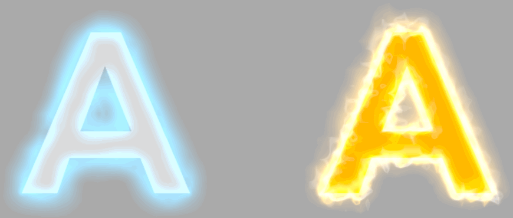

インダイレクトテクスチャ
flyt ファイルをレイアウトエディタにドロップすれば読み込んで確認することができます。
確認できるサンプル

インダイレクトテクスチャを使い、氷の文字、炎の文字を表現しました。
共に「tr_noise_00」のテクスチャをインダイレクトテクスチャとして使用していますが、倍率、アニメーションの違いで異なった表現をしています。
炎の文字
- 「Ａ」の文字に加算で「Ａ」の輪郭のみのテクスチャをインダイレクトテクスチャで歪ませ、SRTアニメをかけています。
- 「N_Flare_00 」「N_Edge」以下のピクチャペインについて
- フラグメントオペレーションは「加算」
- テクスチャコンバイナ/合成設定/種類 を「インダイレクト[歪みソース＝自分、対象＝前段]」
----> インダイレクト調整のスケール値で歪みを調整 - インダイレクトテクスチャのSRTアニメーションで上方向、回転させています。
氷の文字
- 「Ａ」の文字に加算で「Ａ」の輪郭のみのテクスチャをインダイレクトテクスチャで歪ませ、SRTアニメをかけています。
- 「N_Light_00」以下のピクチャペインについて
- フラグメントオペレーションは「加算」
- テクスチャのSRTアニメーションさせ、２段目のテクスチャでマスクしています
- 「N_Ice_00」以下のピクチャペインについて
- 炎の構造と同じです。
(SRTアニメ インダイレクトテクスチャの倍率は違います。)
関連リンク
インダイレクトテクスチャ(テクスチャワープ)機能を利用する